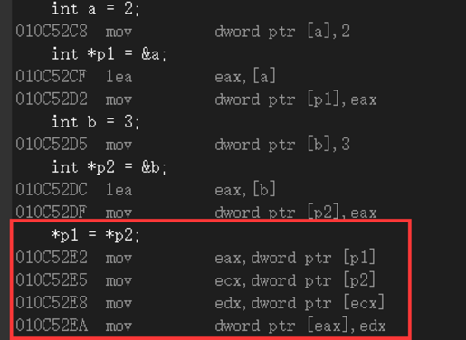
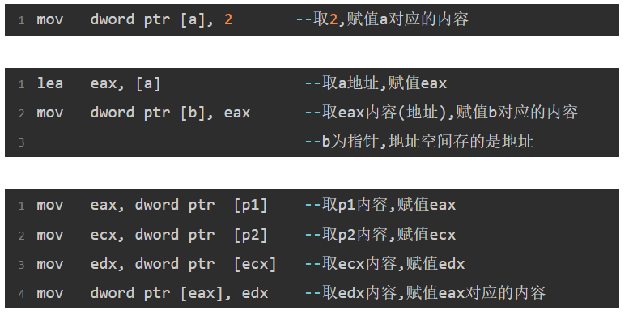

VS2013中反汇编常用指令理解原文出处:本文由博客园博主Duikerdd提供。
原文连接:https://www.cnblogs.com/Duikerdd/p/11334962.html
最近复习C语言,对反汇编感兴趣,就用下图举例解释一下我的理解,如有错还请大佬指教。

首先,认识两个常用指令 :
lea ---> 取地址赋值 mov ---> (同类型)赋值
其次理解 dword ptr [] :
dword(double word)即双字,也就是四字节
ptr(point)即指针
[]放的是一个地址值,这个地址对应一个四字节数据
举个栗子, dword ptr [p1] 表示 : p1(地址值)对应的四字节数据(内容)
解释完了,现在把各部分汇编指令拿出来验证一下
